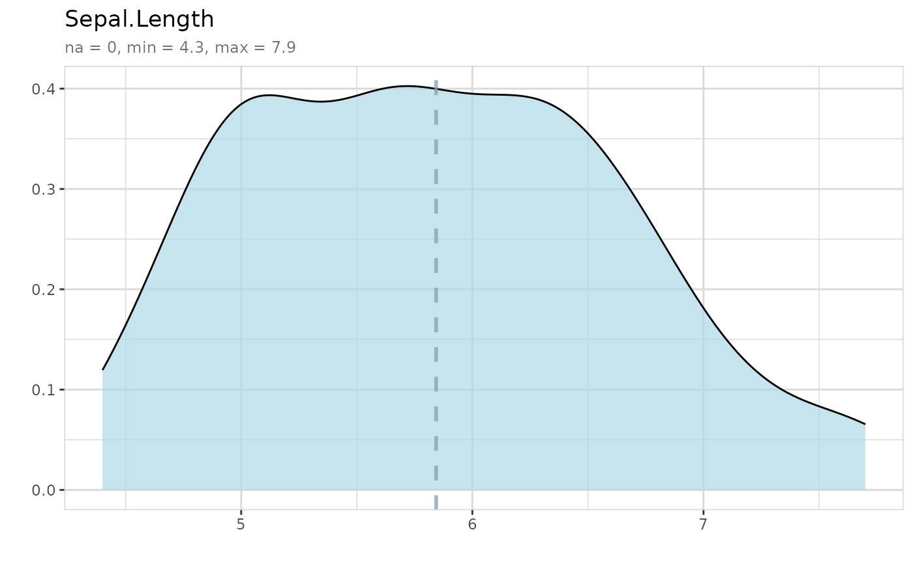

Create a density plot to explore numerical variable
Usage
explore_density(
data,
var,
target,
title = "",
min_val = NA,
max_val = NA,
color = c("#ADD8E6", "#7BB8DA"),
auto_scale = TRUE,
max_target_cat = 5,
...
)Arguments
- data
A dataset
- var
Variable
- target
Target variable (0/1 or FALSE/TRUE)
- title
Title of the plot (if empty var name)
- min_val
All values < min_val are converted to min_val
- max_val
All values > max_val are converted to max_val
- color
Color of plot
- auto_scale
Use 0.02 and 0.98 percent quantile for min_val and max_val (if min_val and max_val are not defined)
- max_target_cat
Maximum number of levels of target shown in the plot (except NA).
- ...
Further arguments
Examples
explore_density(iris, "Sepal.Length")
#> Warning: Groups with fewer than two data points have been dropped.
#> Warning: no non-missing arguments to max; returning -Inf

iris$is_virginica <- ifelse(iris$Species == "virginica", 1, 0)
explore_density(iris, Sepal.Length, target = is_virginica)